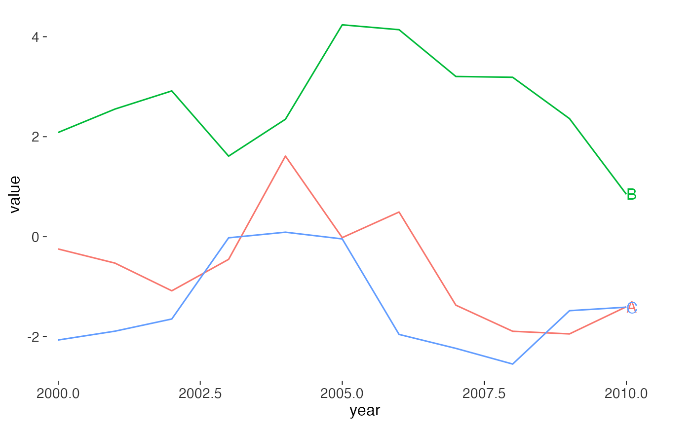

A legend makes the reader look away from the data, hold a colour in memory,
look back, and match. Tufte's rule is to integrate word and image: put the
name on the line. geom_text_last() labels each group at its largest x
value, which is where the eye leaves a time series;
geom_text_first() labels at the smallest.
Usage
geom_text_last(
mapping = NULL,
data = NULL,
position = "identity",
...,
nudge_x = 0,
nudge_y = 0,
hjust = 0,
vjust = 0.5,
geom = c("text", "label"),
na.rm = FALSE,
show.legend = FALSE,
inherit.aes = TRUE
)
geom_text_first(
mapping = NULL,
data = NULL,
position = "identity",
...,
nudge_x = 0,
nudge_y = 0,
hjust = 1,
vjust = 0.5,
geom = c("text", "label"),
na.rm = FALSE,
show.legend = FALSE,
inherit.aes = TRUE
)Arguments
- mapping, data, position, na.rm, show.legend, inherit.aes, ...
Standard
ggplot2layer arguments. Seelayer(). Thelabelaesthetic defaults to the grouping variable.- nudge_x, nudge_y
Offsets applied to the label position, in data units.
- hjust, vjust
Text justification. Sensible defaults are chosen per side.
- geom
Either
"text"(the default) or"label".
Details
Both add horizontal space to the right or left of the panel by clipping off,
so pair them with coord_cartesian(clip = "off") and a plot margin, or
widen the x scale with expansion().
Examples
library(ggplot2)
d <- data.frame(
year = rep(2000:2010, 3),
value = c(cumsum(rnorm(11)), cumsum(rnorm(11)) + 3, cumsum(rnorm(11)) - 3),
series = rep(c("A", "B", "C"), each = 11)
)
ggplot(d, aes(year, value, colour = series)) +
geom_line() +
geom_text_last(aes(label = series)) +
scale_x_continuous(expand = expansion(mult = c(0.02, 0.1))) +
theme_tufte() +
theme(legend.position = "none")
